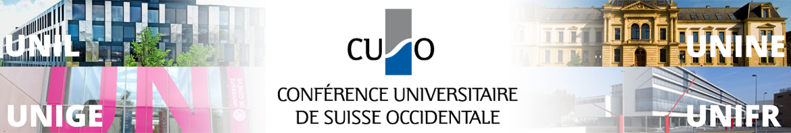
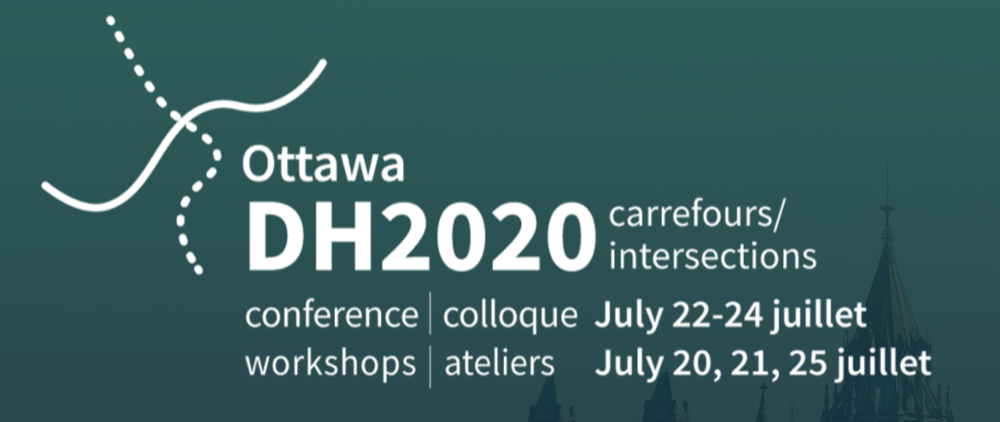
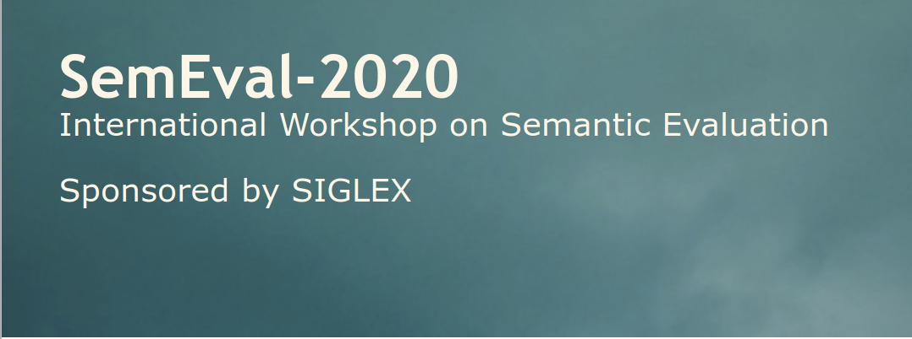
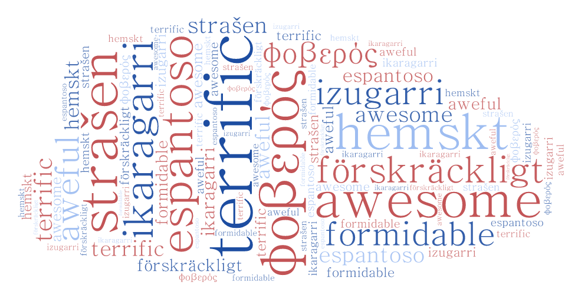

Modality will be addressed in a course of the CUSO PhD Program

WoPoss’s principal investigator, Francesca Dell’Oro, together with Corine Rossari, both from the
University of Neuchâtel, are the organisers of the course “Linguistique historique et
linguistique
de
corpus : perspectives syntaxiques, sémantiques et pragmatiques avec un regard sur la
modalité” offered as part of
CUSO’s PhD Program in Language Sciences.
The goal of the course is to discuss how the methods in Historical Linguistics have been influenced
by
the advances in Corpus Linguistics through the presentation of different uses cases. The study of
modality will be specifically addressed. The course will
take
place on the 18th and 19th of October, 2021, in Les Diablerets (Bernese Alps).
The Empiris Foundation funds corpus linguistics project focused on modality

The Empiris Foundation has recently announced the projects that will be supported through the Jakob
Wüest funding call, and the project Les corpora latins et français : une fabrique pour l’accès à
la représentation des connaissances (Latin and French corpora: a factory to access
knowledge representation), led by Francesca Dell’Oro and Corine Rossari (both University of
Neuchâtel) is among them. The keystone of the project is the creation of comparable corpora in Latin
and French from which it will be possible to study the way in which knowledge is represented in both
languages. Modality will receive a close examination, thus these corpora will contain analytical
information concerning the grammatical and lexical features that codify the attitude of the speakers
in relation to their utterances. The corpora will be published in a support that will enable
systematic queries and statistical analyses.
The project has received a subsidy of 20,000 CHF. The team will consist of the directors of the
project, Francesca Dell’Oro and Corinne Rossari, and two postdoctoral researchers, Helena Bermúdez
Sabel and Cyrielle Montrichard. The starting date has not been announced yet.
Thrilling news for the WoPoss team: three abstracts accepted for DH2020 in Ottawa!

The members of the WoPoss team have three abstracts accepted in the annual conference of the Alliance of
Digital Humanities Organizations (ADHO) that is planned to take place in Ottawa from the 22nd to the
24th of July.
Francesca Dell’Oro will give an overview of our SNF-project in the short paper
“WoPoss - A World of
Possibilities. An open access annotated corpus to study the diachrony of
modality
in the Latin language”. Paola Marongiu will do a lighting talk presenting her PhD project
which is
being developed in the framework of the project: “Co-occurrence
of modal markers: a network analysis
approach”. Last but not least the complete team (H. Bermúdez Sabel, F. Dell’Oro & P.
Marongiu) will discuss the visualization of semantic maps and its
application to modality in Latin with the poster “Visualization
of semantic shifts: the case of modal
markers”.
The current situation is putting on hold many scientific events, but also showing the important of
working with Open Data. Our team deeply believe in Open Science! On May 1st, ADHO and the
DH2020
organizers will provide an update regarding the conference. We hope that the event can take place:
the
lively and in-depth discussions of previous editions have shown its importance for the development
of
the DH field and the reinforcement and expansion of its community.
Looking forward to seeing you in Ottawa!
SemEval-2020

WoPoss is glad to announce the collaboration with Barbara McGillivray and her team on SemEval2020!
The team is currently working on the manual annotation for Task 1, and our contribution will mainly
concern Latin - surprised uh?! The workshop will take place in Barcelona on September 13th-14th.
Find out more about SemEval the
International Workshop on Semantic Evaluation; and about the
28th International Conference on Computational Linguistics that will be hosting the
workshop.
Survey about words of fear

We are currently working on an exposition concerning the words of fear, especially
those that have taken a positive value throughout time. We have individuated for now three types of
words:
- As in French formidable: etymologically related to the feeling of fear (Latin
formidabilis
⇒ “inspiring fear, frightening, terrifying”), it is now mainly used with the meaning “great,
fantastic”;
- As in English terrific: also etymologically related to fear (Latin terreo ⇒
“to terrorize”) it
can
now be used both with a positive (“amazing”) and a negative (“terrible”) meaning;
- As in French terriblement, German schrecklich, English awfully,
adverbs etymologically related
to
fear and that can nowadays intensify an adjective in both a positive and a negative way.
We would like to enlarge the list as much as possible with words matching these three categories
and coming from as many languages as possible. Do you happen to have any ideas and feel like you
would like to contribute to our list? If so, please feel free to contact us: woposs@unine.ch
WoPoss will participate on the second DARIAH-CH workshop

The University of Neuchâtel will hold in December the second DARIAH-CH workshop. The theme of
this second edition is
Sharing the
Experience: Workflows for the Digital Humanities
and Francesca Dell’Oro, Helena Bermúdez Sabel
and Paola Marongiu will be there presenting a paper entitled “WoPoss: a Workflow for the
Semantic Annotation of Modality in a Diachronic Corpus”.
Our abstract is
already available, and please visit this link
to see the complete program.